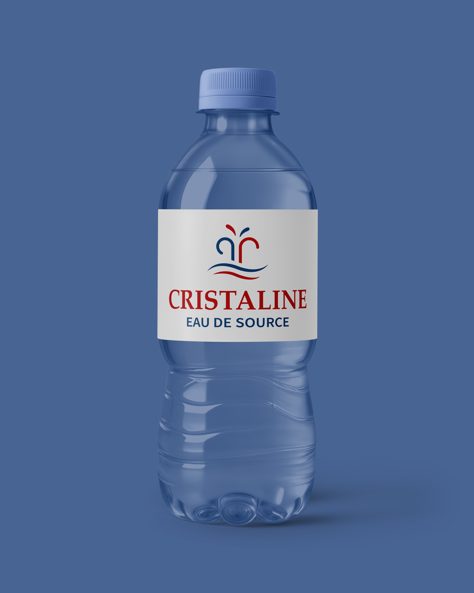

Type
Logo Rebrand
Tool
Illustrator
Logo sinds
1992
Focus
Moderniseren
01 — Probleem
Een logo dat zijn tijd heeft gehad.
Het logo van Cristaline is ongewijzigd gebleven sinds 1992; meer dan 30 jaar. De wereld rond het merk is meegeëvolueerd, maar het logo zelf niet. Het kleurverloop voelt verouderd aan, het lettertype straalt geen moderne premiumwaarde uit, en de complexe opbouw werkt slecht op kleine formaten en digitale toepassingen.
Het doel: het merk moderniseren zonder de essentie; bronwater, natuur, zuiverheid te verliezen.
02 — Aanpak
Simpeler, sterker, schaalbaarder.
De rebranding focuste op drie kerndoelen: moderner maken, simpeler maken, en meer focus brengen. Het kleurverloop werd vervangen door een strakke combinatie van diepblauw en rood; krachtig en herkenbaar. De ronde embleem-stijl maakte plaats voor een open, schaalbaar woordmerk.
Het iconische waterfontein-symbool bleef behouden, maar werd vereenvoudigd tot een clean lijnillustratie die zowel in klein als groot formaat werkt.

03 — Typografie & Kleur
Lettertype en palet.
Twee lettertypes werden zorgvuldig gekozen om de spanning tussen klassiek en modern te bewaken.
Cristaline
EAU DE SOURCE
04 — Resultaat
Van 1992 naar nu.
Het nieuwe logo is strakker, schaalbaarder en moderner; zonder de herkenbaarheid van het merk te verliezen. Het fontein-icoon blijft de ziel van het merk, maar spreekt nu een nieuwer publiek aan.
Het ontwerp werkt op zowel kleine labelformaten als grote digitale toepassingen, en geeft Cristaline een visuele identiteit die de komende decennia mee kan.